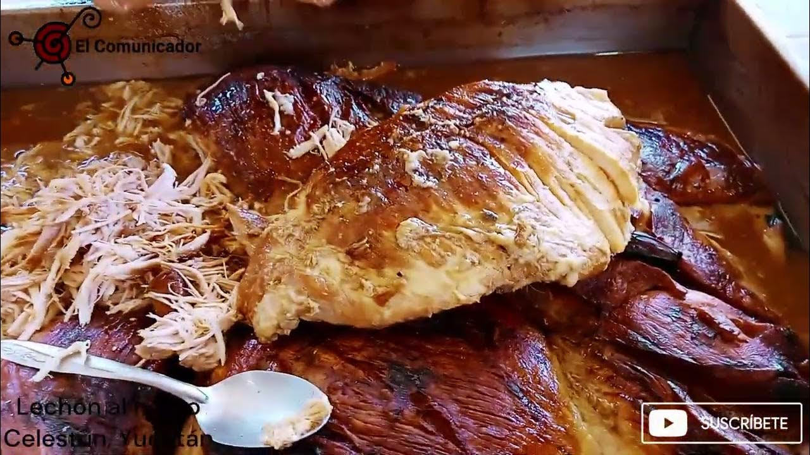

Descripción
El lechón al horno yucateco es un platillo tradicional que consiste en un cerdo entero o trozos grandes, marinados con achiote, naranja agria y especias, y luego horneados hasta que la piel quede crujiente y la carne jugosa.
Es ideal para celebraciones, festividades y reuniones familiares en Yucatán.
Ingredientes
| Ingrediente | Cantidad |
|---|---|
| Cerdo entero o pierna/espaldilla | 3-5 kg |
| Achiote en pasta | 150 g |
| Naranja agria (jugo) | 1 taza |
| Ajo | 4 dientes |
| Sal y pimienta | Al gusto |
| Orégano seco | 1 cucharada |
| Hoja de plátano (opcional) | Para cubrir la carne |
| Limón | Para acompañar |
Preparación paso a paso
- Preparar la marinada: Mezcla el achiote con el jugo de naranja agria, ajo machacado, sal, pimienta y orégano hasta formar una pasta uniforme.
- Marinar el cerdo: Limpia la carne y haz cortes superficiales para que absorba mejor la marinada. Unta la mezcla de achiote por toda la carne. Deja reposar mínimo 4 horas, preferiblemente toda la noche en refrigeración.
- Preparar el horno: Precalienta el horno a 180-200°C (350-400°F).
- Envolver (opcional): Coloca la carne sobre hojas de plátano para conservar humedad y sabor, o directamente en una charola para horno.
- Hornear: Cocina el cerdo durante 2 a 3 horas dependiendo del tamaño, bañando con sus propios jugos cada 30-40 minutos. La piel debe dorarse y quedar crujiente.
- Revisar cocción: La carne debe estar completamente cocida, jugosa y la piel crujiente. Puedes terminar con un golpe de calor más fuerte los últimos 10-15 minutos para dorar aún más la piel.
- Servir: Deja reposar la carne unos 10 minutos antes de cortar. Sirve con limón y acompaña con tortillas, cebolla morada y salsa yucateca si deseas.
Consejos
Para un sabor más intenso, deja marinar toda la noche. Si usas hoja de plátano, humedécela ligeramente antes de colocarla sobre la carne. Acompaña con cebolla morada encurtida y tortillas calientes para un auténtico sabor yucateco.